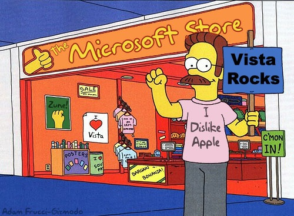
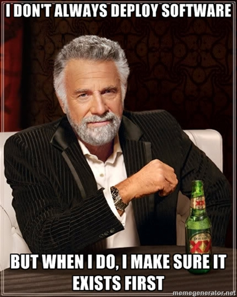

Windows Web Deployment:
Everything you wanted to
know,
but were to horrified to ask!
Christopher Lambacher
KCL Custom Software
@lambacck
Why would you subject yourself to this torture?
You like pain!
You want to be different than the cool Python kids?
Your IT department tells you that this is a MICROSOFT shop?

you have 200,000 lines of Classic ASP that you need to port but can't do it over night!
First Rule Of Deployment Club
Make your app work first,

then work on deployment!
Deployment Models
- Embed in Web Server
- Reverse Proxy
- Expose your development server
Web Servers
Front End
WSGI HTTP Servers
- Paste serve (no Python 3)
- Waitress
- CherryPy
- Twisted (no Python 3… yet)
- uWSGI
- Gunicorn
- Spawning
- etc...
In Server Deployment
- Web server manages processes
- Web server manages communication
- Lower communication overhead (maybe)
Apache

IIS
Reverse proxy
- Load balancing with multiple processes
- Merge multiple applications into one
- Greater process and threading model control
Apache
Comes Fully Loaded
IIS
Needs Some Help
Windows Services
Fork
Also, signals.
Packaging
- pip only installs from source so you also need a compiler
- wheel package format may fix that soon
- easy_install has fewer niceties but supports binary packages. It will work for now
- Be careful about combining pip and easy_install, they install things differently and can get in each others way
py2exe
- py2exe gives you an executable that runs one Python program
- Does not always play nice setuptools/distribute and entry_points
- Put your package on the file system and not in the library.zip it gives you to avoid problems
Virtualenv
Use them
Nicer to use with virtualenvwrapper which is *nix only
Use the activate_this script to activate in a service (or Classic ASP)
Temporary Key Value Stores
You're probably going to find this one the hardest
Memcached is installed as part of a Couchbase install, but you really need to do connection pooling on a high traffic site
Redis has no production ready Windows support
We Use Redis in a Linux VM hosted on a Windows server
Picture Credits
- Tough Cat Eats Pain For Breakfast: http://cheezburger.com/570458880
- One Of These Things Is Not Like The Others: http://cheezburger.com/3297005312
- Microsoft Store: http://gizmodo.com
- Old Dog New Tricks Philosoraptor: http://www.quickmeme.com/meme/35o4c5/
- I Don't Always Deploy Software: http://memegenerator.net/instance/29594266
- Crazy Swiss Army Knife: http://8bit.io/frustrate/
- The One Ring: http://lotr.wikia.com/wiki/One_Ring
- Problems: http://despair.com/problems.html
- Tux Fork: http://www.yolinux.com/TUTORIALS/ForkExecProcesses.html